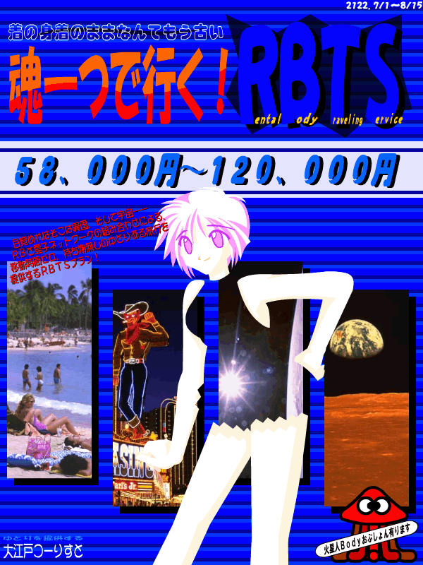

霊子ネットワークによる魂の転送及び、現地にてＲＢの使用 煩わしい入出国手続き無し、移動時間ゼロ 各種装飾品の無料レンタル完備 現地言語及び基礎知識インストール済み 使用ＲＢは各人種及び亜人種用意（日替わりオプションで各宇宙人体完備）、カスタマイズも承ります お客様と同じ外見のＲＢも用意できます（※外見トレースの必要があります） オプションとして、ＲＢの日替わりも承ります（※追加代金 ＲＢ１体に付き１万円） なお、月、火星コロニーなどの宇宙空間ツアーでは、太陽風が霊子ネットワークに影響を与えるため、 出国帰国時間は決められております ——と言った、サービス概要を念頭に置いて描いた、ちょっと趣向を違うＣＧです。 本当は、ＲＢ６用に考えていたネタなんですけどね（苦笑） |